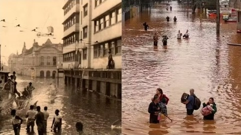

Porto Alegre na enchente de 1941

1941-2024
As enchentes históricas no Rio Grande do Sul, em 1941 e 2024, foram eventos devastadores que causaram danos significativos às comunidades ribeirinhas. Ambos os períodos foram marcados por intensas chuvas que elevaram rapidamente o nível dos rios, resultando em destruição de casas e infraestruturas, além de desafios humanitários. A resposta das autoridades e da população foi crucial para o socorro e a reconstrução, destacando a importância contínua da preparação para desastres e da adaptação às mudanças climáticas.


/i.s3.glbimg.com/v1/AUTH_59edd422c0c84a879bd37670ae4f538a/internal_photos/bs/2024/Q/5/Zhi0fXQqS4qRkhDif20Q/imagem.png)
Eliseu mora em Porto Alegre junto com a família. Mesmo ilhados e sem perspectiva de melhora em relação as enchentes, eles preferem não abandonar a casa onde moram.
"Nós [ele e os familiares] estamos no segundo piso da casa. Temos comida, então preferimos ficar. Os abrigos estão lotados". Ele saiu de casa nadando para conseguir carregar o celular. "Sei que é perigoso, mas eu precisava sair", completa.
Saiba mais
"Eu tinha pena dos outros que eu via no abrigo, mas eu pensei: 'eu nunca vou precisar'. Eu tinha pena de ver aquelas pessoas tudo de fora, na água se mudando, casa caindo. Agora chegou na minha casa isso aí. Eu estou desesperada. Nunca pensei que ia passar por isso", diz Belmira Ramos, aposentada.
/i.s3.glbimg.com/v1/AUTH_59edd422c0c84a879bd37670ae4f538a/internal_photos/bs/2024/c/q/iNd9avSpObevHCgCBGag/relatos-rs-temporais.jpg)